使用标准曲面着色器对汽车进行着色
现在开始进行有趣的操作。首先，让我们将材质添加到模型中。
汽车涂料
- 创建一个 standard_surface 着色器，并将其指定给车身面板几何体。将其重命名为 Car Paint*。将 *base_color 更改为蓝色，并将 specular_weight 增大到 0.3。
|
|
| 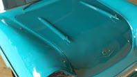 |
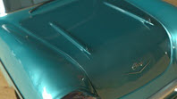 |
| 汽车涂料 |
金属汽车涂料（增加金属度） |
玻璃
- 确保在 Arnold 中对任何需要透明度的几何体禁用“不透明”(Opaque)。选择要作为玻璃的几何体，然后在属性编辑器的“Arnold”部分中禁用“不透明”(Opaque)。
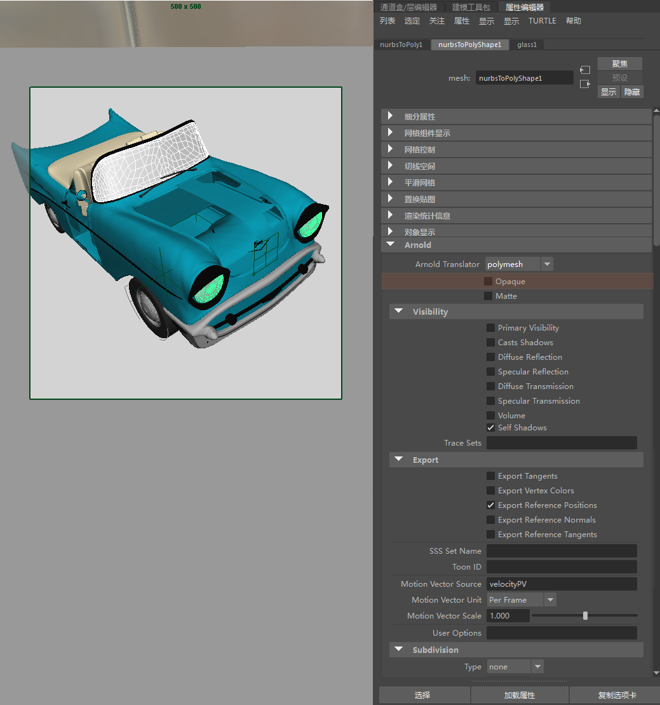
对任何玻璃曲面禁用“不透明”(Opaque)
提示：
将 Arnold 属性应用到场景中的多个对象时，请使用_覆盖集_。
- 创建另一个标准曲面着色器，并将其重命名为 Glass Windscreen*。将其应用于挡风玻璃几何体。将 *base_weight 和 specular_weight 减小到 0。将 specular_ior 更改为 1.5（真实玻璃的值），并将 transmission_weight 增大到 1.0。将 transmittance_color 更改为浅蓝色。这会将挡风玻璃染色为浅蓝色。
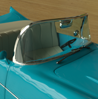
为挡风玻璃创建玻璃着色器
- 将先前用于球体的_镀铬_材质指定给前灯和修剪曲面。
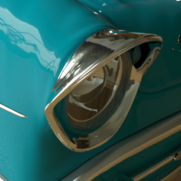
轮缘
接下来，我们将创建软缎面金属材质。创建一个新的标准曲面着色器，并将其指定给轮缘和保险杠。将其重命名为 Satin Metal。将“金属度”(Metalness)*增大到 0.8 左右，将 *specular_weight 减小到 0.7。将 specular_roughness 增大到 0.3 左右以模糊反射。
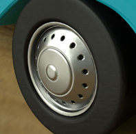
为轮缘创建缎面金属着色器
塑料
- 将另一个 standard_surface 着色器指定给座椅。在本例中，我们为座椅创建软塑料外观。将其重命名为 Soft Plastic*。将 *base_color 更改为浅米色。将 specular_weight 设置为 0.2，将 specular_roughness 设置为 0.6 左右。
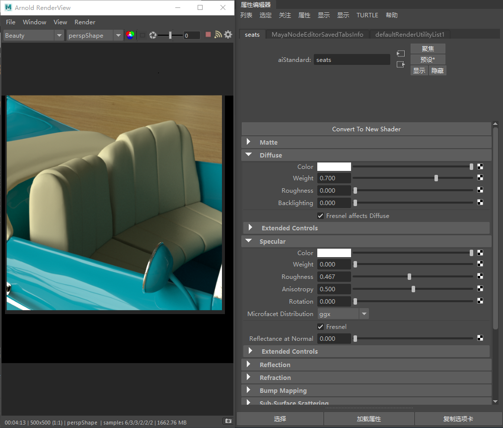
座椅的塑料着色器
- 要使材质外观更加柔和，可以为其添加一些次表面散射。这会使座椅材质看上去吸收了更多的灯光。向下滚动到“次表面散射”(Subsurface scattering)*，并将 sss_weight 值略微增加到 0.1。增加 *sss_radius 值，使塑料看起来更柔和。
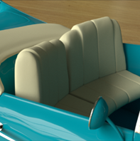
为塑料座椅添加次表面散射
- 创建另一个标准着色器，并将其指定给挡风玻璃雨刷器和方向盘。将其重命名为 Glossy Plastic*。将 *base_color 更改为深灰色。将 specular_color 更改为中等灰，并将 specular_weight 更改为 0.3 左右。
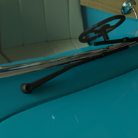
为挡风玻璃雨刷器指定有光泽的塑料材质
轮胎：置换
对于轮胎，请将 Maya 置换着色器与 standard_surface 着色器结合使用。复制 Glossy Plastic 材质，然后将其重命名为 Plastic Tire*。将其指定给轮胎几何体。选择 *Plastic Tire 节点的“着色组”(Shading Group)节点，然后使用鼠标中键将置换节点拖动到属性编辑器中“着色组”(Shading Group)节点的“置换材质”(Displacement mat.)窗口中，如下图所示。
现在，我们需要告知 Arnold 置换轮胎几何体时要使用的细分类型。选择轮胎几何体并打开“属性编辑器”(Attribute Editor)。在“Arnold”下应看到 subdivision_type。将其从“无”(None)更改为 *catclark。增加 *subdivision_iterations 将改进置换效果的细化程度。在本例中，该值已增加到 1。
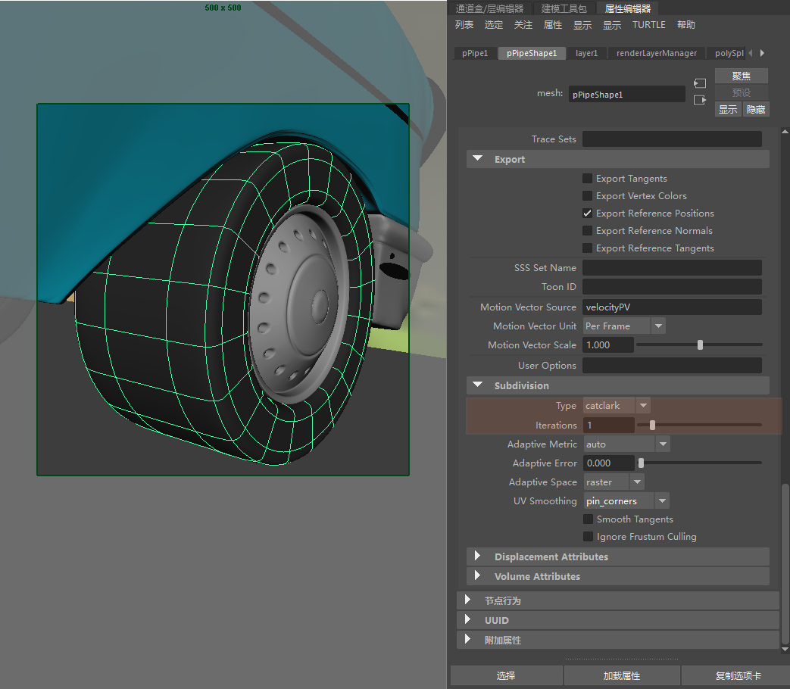
在车轮几何体的 Arnold 属性中更改细分设置
- 选择置换节点并将贴图纹理指定给置换节点的“贴图”(Map)窗口*。在本例中，使用了带有 *cylindrical_projection 节点的渐变*。将 *displacement_scale 增加到 0.01 左右并执行测试渲染。IPR 渲染不会更新对置换所做的任何更改。每次更改 displacement_scale 后，您都需要重新渲染。
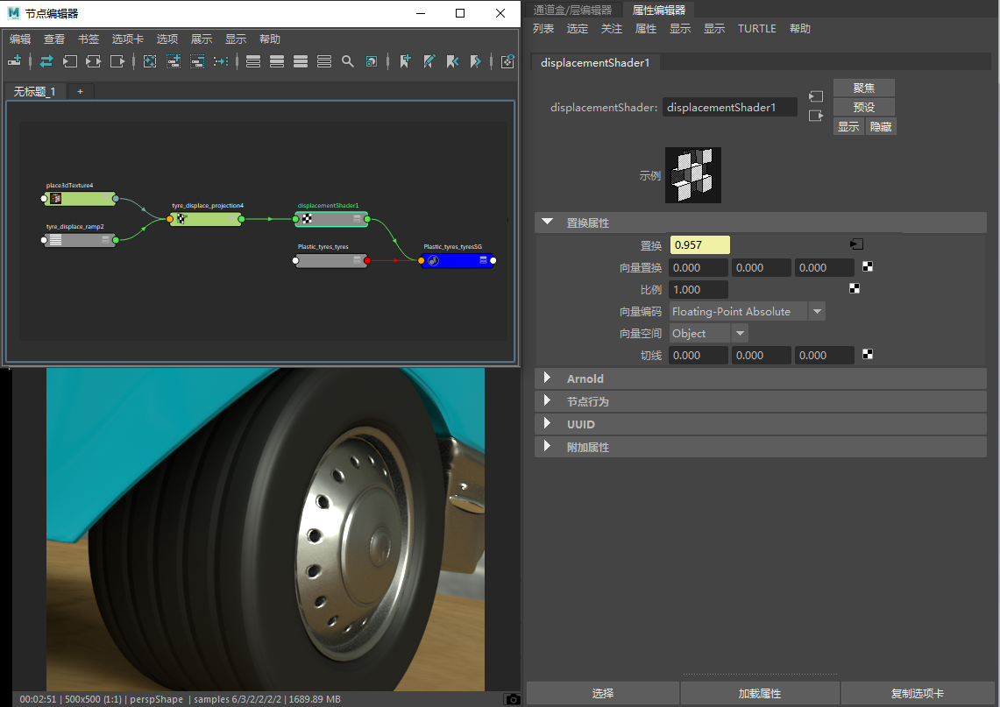
为轮胎指定置换着色器